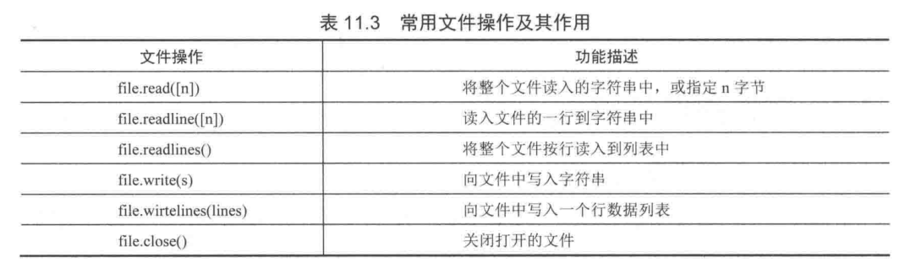

Contents
9.2. 读写文件¶
9.2.1. 再次理解文件打开的模式¶
| 模式 | 说明 |
|---|---|
| w | 以写方式打开 |
| a | 以追加模式打开 (从 EOF 开始, 必要时创建新文件) |
| r+ | 以读写模式打开 |
| w+ | 以读写模式打开 (参见 w ) |
| a+ | 以读写模式打开 (参见 a ) |
| rb | 以二进制读模式打开 |
| wb | 以二进制写模式打开 (参见 w ) |
| ab | 以二进制追加模式打开 (参见 a ) |
| rb+ | 以二进制读写模式打开 (参见 r+ ) |
| wb+ | 以二进制读写模式打开 (参见 w+ ) |
| ab+ | 以二进制读写模式打开 (参见 a+ ) |
9.2.2. Python文件读取方式¶
read([size]) 读取文件全部内容，如果设置了size，那么就读取size字节
readline([size]) 一行一行的读取
readlines() 读取到的每一行内容作为列表中的一个元素
open()函数默认为'r'读模式
open(file, mode='r', buffering=-1, encoding=None, errors=None, newline=None, closefd=True, opener=None)

代码示例 1¶
#!/usr/bin/env python
#-*- coding:utf8 -*-
print('蚂蚁庄园'.center(50,'='))
with open('message.txt','r') as f:
f.seek(4)
string = f.read(4)
print(string)
print('\n','='*29,'over','='*29,'\n')
代码示例 2¶
#读文件 1
f = file('/etc/passwd','r')
c = f.read().strip() # 读取为一个大字符串，并去掉最后一个换行符
for i in c.split('\n'): # 用换行符切割字符串得到列表循环每行
print i
f.close()
循环读文件的行
f = open("with语句.py", "r", encoding="utf-8")
while True:
line = f.readline()
if not line:
break
print(line.strip())
f.close()
#读文件 2
f = file('/etc/passwd','r')
while True:
line = f.readline() # 返回一行
if len(line) == 0:
break
x = line.split(":") # 冒号分割定义序列
#x = [ x for x in line.split(":") ] # 冒号分割定义序列
#x = [ x.split("/") for x in line.split(":") ] # 先冒号分割,在/分割 打印x[6][1]
print x[6],"\n",
f.close()
#读文件 3
for i in open('b.txt'): # 直接读取也可迭代,并有利于大文件读取,但不可反复读取
print i
由于文件操作可能会出现IO异常，一旦出现IO异常，后面的close()方法就不会调用，为了保证程序的健壮性，
我们需要使用try...finally来实现
#!/usr/bin/env python
# -*- coding:utf8 -*-
# auther; 18793
# Date：2019/7/27 10:05
# filename: open基本使用.py
try:
f = open("message.txt", "r")
print(f.read())
finally:
if f:
f.close()
##一行一行的读取文件
#!/usr/bin/env python
#-*- coding:utf8 -*-
# auther; 18793
# Date：2019/4/16 10:35
# filename: readlinefile.py
print("\n","="*20,"Python来读取文件","="*20,"\n")
with open("message.txt","r", encoding="utf-8") as file:
number =0
while True:
number +=1
line = file.readline()
if line == "":
break
print(number, "行内容是: ", line, end="\n")
print("\n","="*20,"over","="*20,"\n")
Python提供了一种简单的写法，使用with语句来替代try…finally代码块和close（）方法，
with open(r'c:\text\qiye.txt','r') as fileReader:
print(fileReader.read())
9.2.3. 逐行读取文件¶
代码示例¶
#!/usr/bin/env python
#-*- coding:utf8 -*-
path = r"写入文件内容.py"
#传入要读的文件路径
file = open(path,"r",encoding="utf-8",errors="ignore")
"""
open表示打开你要执行的文件用读的方式打开
第一个参数是上面的文件path路径,第二个是所要执行的操作，（r）代表读，
#encoding="utf-8表示指定编码为“utf-8”，errors="ignore"表示读的时候遇到错误忽略
"""
while True:
mystr = file.readline()#表示一次读取一行
if not mystr:
#读到数据最后跳出，结束循环。数据的最后也就是读不到数据了，mystr为空的时候
break
print(mystr)#打印每次读到的内容
9.2.4. 读取大文件时，建议采用while循环来逐行进行读取¶
代码示例¶
with open('message.txt', 'r') as f1:
number =0 #标识符为0开始
while True:
number +=1
line = f1.readline() #逐行读取文件
if line == '': #如果读取完毕，则跳出循环
break
print(number,line,end='\n')
print("文件读取完毕".center(50,'='))
print()
print('蚂蚁庄园'.center(50,'='))
with open('message.txt','r') as f:
string = f.readlines()
for line in string:
print(line)
print('\n','='*29,'over','='*29,'\n')
例如小文件可以直接采取read()方法读到内存，大文件更加安全的方式是连续调用read（size），而对于配置文件等文本文件，使用readline()方法更加合理。
代码示例¶
with open(r'c:\text\qiye.txt','r') as fileReader:
for line in fileReader.readlines():
print(line.strip())
将文件中的所有单词首字母大写¶
with open("data.txt") as inf, open("out.txt", "w") as outf:
for line in inf:
outf.write(" ".join([word.capitalize() for word in line.split()]))
outf.write("\n")
9.2.7. Python文件写入方式¶
方法 说明
write(str) 将字符串写入文件
writelines(sequence or strings) 写多行到文件，参数可以是一个可迭代的对象，列表、元组等 |
代码示例1¶
#!/usr/bin/env python
#-*- coding:utf8 -*-
'''
print('\n','='*10,'蚂蚁庄园动态','='*10)
file = open('messages1.txt','a',encoding='utf-8')
file.write("this is message txt\ntest!\n")
print('\n写入了一条动态......\n')
file.flush()
file.close()
'''
list1 = ['姚明','博尔特','姆巴佩','张艺龄']
list2 = [i + '\n' for i in list1]
with open('message2.txt','w') as file:
file.writelines(list2)
9.2.8. 代码示例2¶
写文件
i={'ddd':'ccc'}
f = file('poem.txt', 'a')
f.write("string")
f.write(str(i))
f.flush()
f.close(
使用with上下文管理器，写入文件。
with open(r'c:\text\qiye.txt','w') as fileWriter:
fileWriter.write('qiye')
9.2.10. Python文件操作所提供的方法¶
close(self):
关闭已经打开的文件
fileno(self):
文件描述符
flush(self):
刷新缓冲区的内容到硬盘中
isatty(self):
判断文件是否是tty设备，如果是tty设备则返回True，否则返回False
readable(self):
是否可读，如果可读返回True，否则返回False
readline(self, limit=-1):
每次仅读取一行数据
readlines(self, hint=-1):
把每一行内容当作列表中的一个元
9.2.11. 文件随机读写¶
代码示例¶
# 文件本没有换行,一切都是字符,文件也没有插入功能
f.tell() # 当前读写位置
f.read(5) # 读取5个字符并改变指针
f.seek(5) # 改变用户态读写指针偏移位置,可做随机写
f.seek(p,0) # 移动当文件第p个字节处，绝对位置
f.seek(p,1) # 移动到相对于当前位置之后的p个字节
f.seek(p,2) # 移动到相对文件尾之后的p个字节
f.seek(0,2) # 指针指到尾部
# 改变指针超出文件尾部,会造成文件洞,ll看占用较大，但du -sh却非常小
f.read(65535) # 读取64K字节
f.write("str") # 写会覆盖当前指针后的响应字符,无插入功能
eg
#调用open()方法打开指定的文本文件
fb=open("introduct.txt","r")
#将文件指针移到文件的起始处
fb.seek(0)
#调用read(n)方法读取文件的内容
text=fb.read(4)
#输出字符串变量text的内容
print(text)
#将文件指针往前移动20个字节
fb.seek(20)
#调用read(n)方法读取文件的内容
text=fb.read(13)
#输出字符串变量text的内容
print(text)
#调用close()方法关闭文件
fb.close()